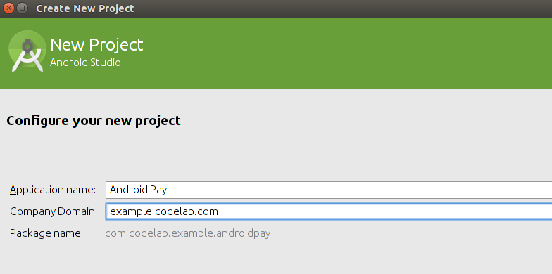
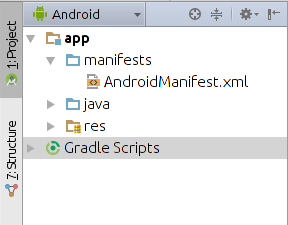
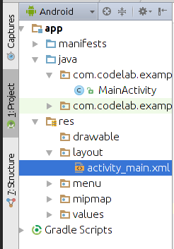
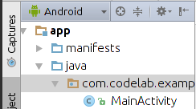
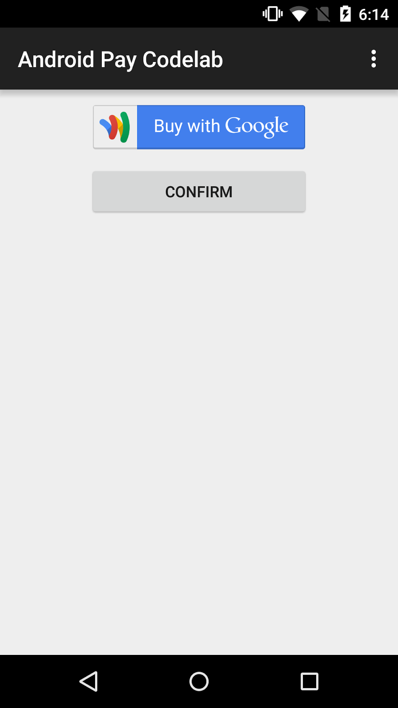

Welcome to the Android Pay codelab! In this codelab you will learn how to set up your Android app to collect payment information from users with just a few clicks. No more flaky credit card forms, this is how your users should be shopping in your application.
Note: the Android Pay app has not launched yet, so the visual assets are not finalized. You are getting an early preview of the API that will be available when Android Pay launches to the public in a few weeks. As you proceed through this codelab you will notice Google Wallet branding. When Android Pay launches, those Google Wallet assets will be seamlessly replaced with Android Pay assets with no code changes required. For more information, visit developers.google.com/android-pay.
Create an Android Studio Project
Open Android Studio and create a new project. Enter your Application Name and Company Domain. You can enter any value in these fields for the purposes of this codelab.

After picking a location to save your project, click Next. The next screen will ask you to select form factors and SDKs, just click Next again to accept the default setting.
On the Add Activity screen, select Blank Activity and click Next. The next screen will ask for an activity name, layout name, and more. Leave the default values and select Finish.
Add Dependencies
The Android Pay API is part of Google Play Services, so let’s add a dependency on Google Play Services to the project:
Open the build.gradle file in the app module and add the following to the dependencies block:
Next, click the “Gradle sync” button in the top toolbar. If this button is grayed out, wait for Android studio to finish loading the project (you can see progress in the lower right):

to download the dependencies you just added.
Add the Google Play Services Tag
In the ‘Android’ project view, open app > manifests > AndroidManifest.xml:

Inside the <application> tag, add the following <meta-data> tag to enable Google Play Services in your app:
Add the Android Pay Tag
In the same way you added the Google Play Services tag, add a tag to enable the Android Pay API in your app:
Congrats, you've finished setup! Next up, let's create the Buy with Google Button and Masked Wallet Request.
Add a FrameLayout to hold the Android Pay Button
In this step you will modify the layout created by Android Studio and add a placeholder where you will add the Android Pay button.
Open the file activity_main.xml file in the Android view:

This will open into the ‘Design’ view where you can see a preview of your layout. At the bottom of the screen, click Text to open the text view where you can edit hr XML directly. Replace the content of the file with the following code:
Add a FrameLayout inside the LinearLayout. This will hold the Android Pay button. We'll make it 200dp x 48dp with 10dp margins:
That’s all the layout editing we need to do for now. It’s time to get into the code!
The Transaction Flow
From here on you will begin implementing the steps of the transaction flow. Getting payment information through Android Pay takes place in a four steps:
- Request a Masked Wallet object: this is where you will define the details of the charge you would like to make and the information you will require (address, phone number, etc).
- Get a Masked Wallet object: this happens after the user has clicked the Buy button and provided all the information you asked for. At this point the user should be done entering information and you should display a confirmation screen.
- Request a Full Wallet object: once you have used the Masked Wallet object to display a confirmation screen, you can request a full wallet object. This confirms the details of the Masked Wallet request and asks for the actual information you will need to make the charge (credit card number, payment processor token, etc)
- Get a Full Wallet object: at this point you are ready to make the charge. The Full Wallet object contains either a credit card number or processor token that you can use to charge the user for the transaction.
Create a MaskedWalletRequest Helper Function
Now you'll create the Masked Wallet request which defines the information that we're requesting from the user and some estimated information about their purchase.
Open the MainActivity.java file from the Android view:

Inside the MainActivity class, define a helper function to create the Masked Wallet Request. The Masked Wallet Request defines the information about the order and what you're requesting from the customer:
Instead of `return null;` let's replace it with a MaskedWalletRequest which we can create using the Builder pattern. Here we're defining that we want the user's phone number, shipping address and that they're purchasing a Google I/O sticker for approximately $15 (including tax and shipping):
Note: Android Studio will underline classes in red when imports are not met. You can import classes by placing the cursor over the class and hitting the alt + enter buttons.
Now you have created a request describing what your user would like to buy in this app. In the next steps we will configure the Android Pay button to execute this request and learn how to actually get the user’s payment information.
Add the WalletFragment
We will create the Android Pay button using the WalletFragment class, which is essential to showing this button and other standard UI elements.
In MainActivity, add a SupportWalletFragment instance variable and a request code constant so that we can use them later:
In the onCreate method define the style the WalletFragment will have:
Also in onCreate, define the WalletFragmentOptions that will control the WalletFragment:
Finally, still in onCreate, instantiate and initialize the WalletFragment:
Now the WalletFragment object is fully instantiated. In the next step we will add it to the UI so that your app can display the Android Pay buy button.
Insert the Fragment into the UI
In MainActivity, create a class constant to contain the WalletFragment’s tag:
Next, initialize the FrameLayout we added earlier with the WalletFragment in the onCreate method:
We don’t want to add WalletFragment twice, so we should surround all of the initialization code we have written so far with a check to see if it already exists in the Activity. Your onCreate should now look like this:
Now your Android Pay buy button will be added to the UI at the right time and with the correct style!
Handling Masked Wallet Request Intents
When you click the Android Pay button, you will kick off a request for a Masked Wallet. In this section you will learn how to handle the result of that request.
Add the following instance variable to MainActivity to store the MaskedWallet:
Then, add the following function to override onActivityResult:
In onActivityResult, check to see if the request code is for your Masked Wallet request and store the resulting response:
With that code in place, you will be able to receive the result of a MaskedWallet request. Now is a good time to run your app and make sure everything is working well.
You should see a Buy button. Clicking the button will bring up a payment method screen where you can select a credit card and billing address. Don’t worry, we are using the sandbox environment so no charges you make in this codelab will be real. If you want to enter a credit card, use the following information:
Card Type: Visa
Card Number: 4111 1111 1111 1111
CVC: any three digits
Expiration: any date in the future
Initiate the Full Wallet Request
In the last step you got Masked Wallet information representing the user’s desired purchase. When you request a Full Wallet, you get a one-time card from Google and the user’s full billing and shipping information. This card is backed by the user’s secured payment credentials.
First, re-open the activity_main.xml file. We will add a button inside the LinearLayout (below the FrameLayout). When clicked, this button will call the requestFullWallet function which we will create later:
That’s enough layout work for now, we will make this button do something in the next few steps.
Requesting the Full Wallet
Just like with Masked Wallet, you need to create a request object to get a Full Wallet. Open MainActivity.java again. Create a helper function to generate the Full Wallet Request. It should take the Google Transaction ID as a parameter. The Google Transaction ID can be found in the Masked Wallet Response. You'll also want to add information about the purchase including the exact amount you will be charging for. Here we have a $10.00 sticker with $0.10 tax:
You can see that this is very similar to the Masked Wallet request, except that we now have a transaction ID. In the next steps we will use this request to get the Full Wallet object which will enable us to actually get chargeable payment information.
Managing a GoogleApiClient
If you have ever used a Google API in your Android app, you may be familiar with GoogleApiClient. GoogleApiClient is your key to accessing Google Play Services from your Android application. In this step we will configure a GoogleApiClient, which we will need before we can continue.
First, add the following class variable to MainActivity:
At the end of the onCreate method, add the following code to build the client:
Then change the class definition of MainActivity to implement these two interfaces. After you do this Android Studio will complain that we have not implemented the required methods. We will do that next:
Add the following code to your activity to implement the required methods for GoogleApiClient:
Now you have the basic setup for GoogleApiClient, and we can use it to request the Full Wallet.
Add a Function to Request the Full Wallet
Here we'll create a function that handles the button click, calls our helper function and requests the Full Wallet.
Define a class constant request code for the Full Wallet Request and an instance variable to store the Full Wallet response. This should look familiar as it is similar to what we did for Masked Wallet:
Define a function to generate the Full Wallet Request using the function we defined earlier and make the request to load the Full Wallet. This function is defined by the button we defined a few steps ago:
Add a case to onActivityResult to handle the Full Wallet response:
Once you have the Full Wallet object, you have the one-time payment credentials. You can access the credit card number with the following call:
In this app we added a Toast to display the credit card number. We would not normally do this in a real application for security reasons, but it is a good way to demonstrate that the request succeeded in this codelab.
Now that you have the Full Wallet you are almost done! You have a credit card number which you can use to process the transaction. Now we just have to finish by keeping track of transaction status.
Create and Send the Notify Transaction Status Object
Once we have successfully completed the transaction, we need to send a Notify Transaction Status object to tell Android Pay whether or not the card successfully charged. There could be instances where the user's card is expired or their billing address has changed. For this app, we'll just send a success to demonstrate.
Create a helper function to generate the Notify Transaction Status Request:
In onActivityResult in the Full Wallet request case, call notifyTransactionStatus:
Now pat yourself on the back, you just did a complete integration with Android Pay! It’s time to run your app again and see how it went.
That's it, you've integrated Android Pay in 30 minutes! Run your app again, it should look like this:

Tap the Buy button and enter the fake Visa credit card from before. Feel free to enter any valid shipping/billing address, this is all sandboxed.
Once you've selected your payment credentials, click the Confirm button. The Toast displays the Full Wallet Response one time card number.
You can take the payment information and then pass it to your payment processor and process it like a regular credit card.
Now that you have a credit card you will want to integrate with a payment processor. Android Pay integrates easily with Stripe and Braintree, visit their websites to learn more.